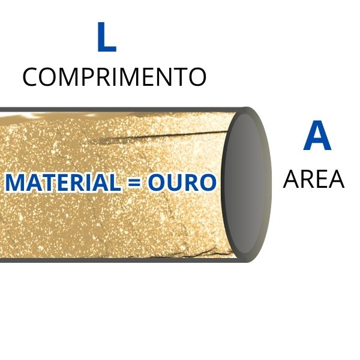

Resistividade
O que é Resistividade Elétrica?
A resistividade (ou resistividade elétrica) é uma propriedade intrínseca dos materiais que quantifica a oposição que um material apresenta à passagem de uma corrente elétrica. É uma medida de quanto um material resiste ao fluxo de corrente elétrica. A resistividade é denotada pela letra grega ρ (rho) e é expressa em ohm-metros (Ω⋅𝑚).
A resistividade pode ser definida pela relação: 𝑅 = 𝜌 x (𝐿/𝐴), onde:
R é a resistência do fio
𝜌 é a resistividade do material (ohm x metros)
A é a área da seção transversal do material (em metros quadrados, 𝑚2)
L é o comprimento do material (em metros, 𝑚).

Principais fatores que influenciam a resistividade:
Tipo de Material: Diferentes materiais têm diferentes resistividades. Por exemplo, metais como cobre e prata têm baixa resistividade, enquanto materiais como borracha e vidro têm alta resistividade.
Temperatura: A resistividade de um material geralmente aumenta com o aumento da temperatura. Para condutores metálicos, a resistividade aumenta linearmente com a temperatura. Para semicondutores, a relação pode ser mais complexa.
Pureza do Material: Impurezas no material podem aumentar sua resistividade.
Estrutura Cristalina: Defeitos e a estrutura cristalina do material podem influenciar a resistividade.
Resistividades típicas de alguns materiais a 20°C:
Aplicações e importância:
Engenharia Elétrica e Eletrônica: A escolha de materiais com baixa resistividade é crucial para minimizar perdas de energia e aumentar a eficiência de dispositivos elétricos e eletrônicos.
Sensores de Temperatura: A dependência da resistividade com a temperatura é utilizada em sensores como termistores e RTDs (Resistive Temperature Detectors).
Semicondutores: A resistividade de materiais semicondutores como silício e germânio é fundamental para o funcionamento de dispositivos como transistores e diodos.
Compreender a resistividade dos materiais ajuda no design e na fabricação de uma ampla gama de dispositivos e sistemas elétricos e eletrônicos, garantindo eficiência e funcionalidade adequadas.
Calcular
para realizar o calculo de resistividade de um material abaixo será necessário informar o tipo do material, sua area em mm2 e por fim o seu comprimento em metros